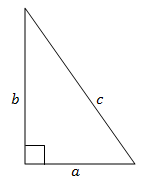
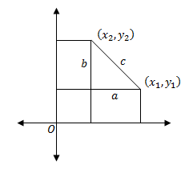

निगमन
यदि एक समकोण त्रिभुज का आधार \(a\), लंब \(b\) तथा कर्ण \(c\) है, तो पाइथागोरस प्रमेय के अनुसार
\[c^2 = a^2 + b^2.\]

माना कार्तीय तल में दो बिंदु \((x_1, y_1)\) तथा \((x_2, y_2)\) हैं जिनके बीच की दूरी \(c\) हमें निकालनी है।

उपरोक्त चित्रानुसार, दोनों बिन्दुओं से हम \(x\)-अक्ष और \(y\)-अक्ष पर लम्ब डालते हैं। इस प्रकार हमें एक समकोण त्रिभुज प्राप्त होता है जिसकी भुजायें निम्नवत हैं:
\[\begin{align*}a &= |x_2 - x_1|\\ b &= |y_2 - y_1|\end{align*}\]
अब पाइथागोरस प्रमेय के अनुसार
\[\begin{align*}c^2 &= a^2 + b^2\\&= |x_2 - x_1|^2 + |y_2 - y_1|^2\\ &= \left(x_2 - x_1\right)^2 + \left(y_2 - y_1\right)^2\end{align*}.\]
अतः
\[c = \sqrt{\left(x_2 - x_1\right)^2 + \left(y_2 - y_1\right)^2}\]